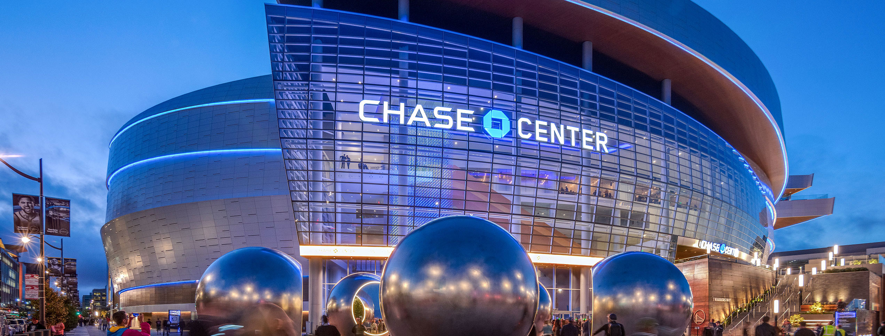
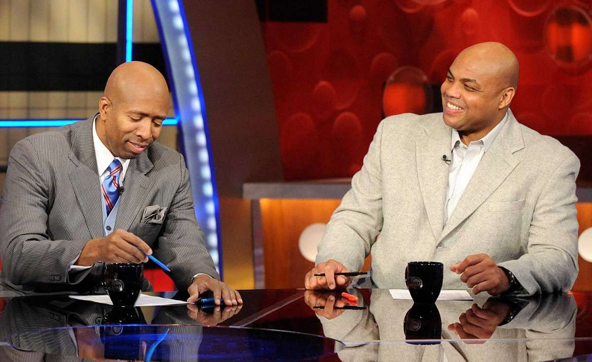
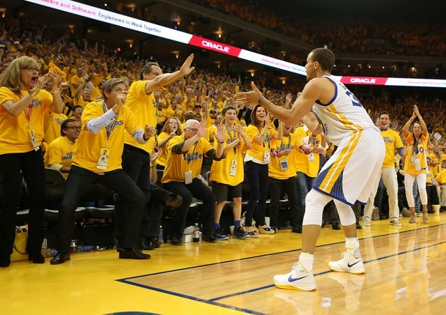

Comment 1: Implement as is
The computer generated schedule makes logical sense already and could be implemented next season. We would merely have to change the dates and adjust for the cycle of teams playing 3 or 4 times. Nonetheless, we have games on dates and if enough decision-makers were on board, an NBA season with no back to backs could occur
next season.
Download Computer Generated ScheduleComment 2: Facility Availability
Facility Availability is a constraint that I ignored throughout the process because I personally believe networking and negotiating could help solve this problem. NBA Arenas will still be open for most of the year when teams are not playing. If NBA teams could get first "dibs" on using an arena it would help the actual schedule makers create a schedule with less back to backs as well. These buildings bring prosperity to the neighborhoods they exist in because of the teams and players so I personally believe they should be open at the right times to help keep the players safe.
I could write a constraint in my LP model not allowing particular teams to play home games if the arena was not available on certain nights. Nevertheless, I personally think that this issue is best solved through convincing the righr decision makers rather than fancier data modeling.

Comment 3: TV Availability
In the current version of the computer generated schedule, all games take place every other day. As a consumer of NBA basketball, I do like to watch a game every day and this would be disrupted with the schedule proposed. We could take advantage of the property of the separate Western Conference and Eastern Conference models by shifting one model by a single day. This adjustment would result in a "Western Conference day" and an "Eastern Conference Day". A more elegant solution would be a single model for the entire season in which games could take place on any day and not just designated "game days".
I have a 4000 variable prototype of a more granular model that uses individual flights as variables as opposed to road trips. My attempt to scale this model up to 5 million variables was unsuccessful because the model simply took too long to solve on my computer using Excel and Open Solver. Figuring out how to unleash this more detailed model could allow for constraints involving both facility availability and creating an enjoyable TV schedule.

Comment 4: Road Trip Length
The 15 game road trip at the beginning of the season is a little too long and I could break that road trip up. For this rendition, I optimized to save total distance traveled so the 15 game trip did help save total mileage. Another factor that leads to longer road trips is the LP model does not require home games in between road trips. Therefore, back to back road trips can combine together to essentially become longer road trips. I am proud of my current milestone of a working schedule with no back to backs and less mileage. Creating shorter road trips might add more mileage but would make the schedule better for the players. The main goal of the model is to make a schedule that keeps players happy and healthy. Implementing measures to create shorter road trips will be my next priority as I
continue to improve this project.
Comment 5: Business and Consumer Values
The schedule and the league is optimized to make money for shareholders. The NBA's product will be profitable regardless of minor scheduling fluctuations. My personal belief is that the institution of business exists to make people's lives better. However, sometimes we are so blinded by money that we lose touch with the true meaning of business: solving problems. The proposal does not involve money; it is purely in the spirit of helping others. As fans, we may simply want the schedule to entertain us, with primetime games on convenient nights. However, I personally believe that businesses and consumers should care about the well being of employees. In this case, the employees are people many of us look up to, NBA players. Despite how invincible they can seem, they have feelings too, they get injured, and the length of their career can hinge upon which night a particular game is played on. I think that if the NBA as a business and we as consumers/fans band together we can use technical innovations to optimize the schedule for the benefit of the players who give us so much joy.
